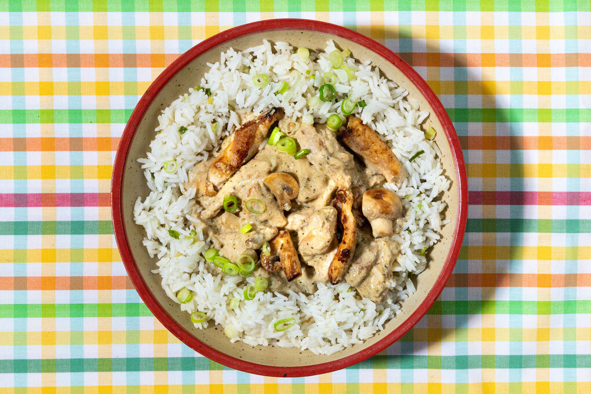

🍚champignons en rijst
bron: chatgpt
📄beschrijving
Een romig kipgerecht met champignons, ui en knoflook. De saus is zacht en vol van smaak. Geserveerd met rijst is het een eenvoudige, warme maaltijd.

🥣ingredienten
voor ± 10 pannenkoeken
- 300 g kipfilet
- 250 g champignons
- 1 ui
- 2 teentjes knoflook
- 200 ml kookroom
- 1 tl paprikapoeder
- Peper en zout
- Olie of boter
- Rijst (naar keuze)
🗣️instructies
- Kook de rijst volgens de verpakking
- Snijd de kip in blokjes en kruid met peper, zout en paprikapoeder.
- Snipper de ui en hak de knoflook fijn. Snijd de champignons in plakjes.
- Verhit olie/boter in een pan en bak de kip goudbruin. Haal uit de pan.
- Bak in dezelfde pan de ui en knoflook glazig, voeg de champignons toe.
- Doe de kip terug in de pan, voeg de room toe en laat 5–10 minuten zachtjes pruttelen.
- Proef en breng op smaak met extra peper/zout.
💡tip
voeg op het einde een handje verse peterselie of tijm toe voor extra frisheid en smaak.